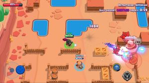

Привет, это сайт Платона!
мне 10 лет я занимаюсь шахматами,футболом
я учю китайский язык,
мой любимый предмет математика

Он стреляет рок гитарой
когда у него ульта,он садится на дракона и стреляет огнем

Он стреляет металической рукой
когда у него ульта ты нажимаешь на супер и прыгаешь 1 раз

Он стреляет ядовитами перьями
когда у него ульта он прыгает далеко 1 раз и когда он прыгает и то тово места стреляет перьями

Она стреляет гайками
когда у нее ульта она бьет лазером
Brawl Stars (британское произношение: [bɹɔːl stɑːz]) — игра для мобильных устройств в жанрах MOBA и геройский шутер, разработанная и изданная финской компанией Supercell. Глобальный релиз состоялся 12 декабря 2018 года.
Цель игрока — продвигаться по игровой трофейной дороге, участвовать в боях с другими игроками, а также открывать и улучшать новых игровых персонажей с уникальными способностями и характеристиками.
Геймплей игры сосредоточен на том, чтобы в одиночку, командой из двоих человек или в кооперативе из троих или пяти человек победить команду других игроков, или противника под руководством ИИ, в разнообразных игровых режимах. Игроки могут выбрать персонажей, каждый из которых имеет свои навыки и суперспособность. Персонажей можно получить во внутриигровом магазине за кредиты, а гаджеты, звёздные силы и снаряжение — купив за монеты. В мае 2020 года в одном из обновлений игры была добавлена новая система наград под названием Brawl Pass. Когда игроки участвуют в сражениях, они зарабатывают жетоны, используемые для разблокировки уровней наград. Игроки могут получать кредиты, кристаллы, скины, значки (эмодзи, которые можно использовать во время баталий или в комнате командной игры), монеты, очки силы, спреи (специальные рисунки, которые можно оставлять на земле на поле боя) и бойцов. Существует три типа Brawl Pass: бесплатный и платный, а также Brawl Pass Plus, оба этих платных версий приобретаются за настоящие деньги[3][4]. Некоторые игроки в режиме одиночного столкновения применяют тактику временного объединения, при которой двое или более бойцов совместно стараются уничтожить всех остальных для увеличения своих шансов на победу. Несмотря на то, что чат в этом режиме недоступен, игроки разработали эффективный способ невербальной коммуникации. При виде потенциального союзника игрок предлагает объединиться, сделав несколько оборотов своим бойцом. Принятие предложения сигнализируется аналогичным способом. Похожая тактика наблюдалась также в Fortnite и PlayerUnknown’s Battlegrounds, что может свидетельствовать о её эффективности. Компания Supercell неоднократно признавала, что эта техника входит в противоречие с дизайном игры и раздражает остальных игроков, но выработать какого-либо эффективного механизма противодействия им не удалось[5]. В декабре 2022 в обновлении были удалены ящики и появился новый способ получения бойцов — продвижение по так называемой «Дороге Старр». Для продвижения по ней игрок должен собирать новую валюту, которая получила название «Кредиты». После сбора определённого количества кредитов игрок получает бойца. Также существовали хромакредиты, с помощью них можно было разблокировать бойцов хроматической редкости. В июне 2023 года в игру была добавлена новая система получения наград и призов — «Призы Старр», которые являются заменой ящикам[6].Столкновение (англ. Showdown) — режим в жанре Королевской Битвы, не имеющий временных ограничений. Есть 2 типа режима — одиночное и парное. В одиночном столкновении побеждает последний выживший среди 10 игроков, а в парном — последняя выжившая команда из 2-х игроков среди 5 команд (тоже по 2 игрока). По карте разбросаны коробки с кубиками усиления, которые повышают здоровье и урон игрока, а также со временем карта будет сужаться к центру ядовитыми облаками, наносящими возрастающий урон игрокам каждую секунду[7][8][9].
Броулбол (англ. Brawlball) — режим 3 на 3 игрока, где главная задача — забить 2 гола в ворота противников, управляя для этого специальным мячом. Если не было забито второго гола, то побеждает команда с большим счётом. Если счёт равный, то игрокам даётся 1 минута для забивания гола, однако препятствия на карте будут разрушены. Если за дополнительное время ни одна команда не сможет забить гол, то игрокам присваивается ничья.
Нокаут (англ. Knockout) — режим 3 на 3 игрока, где главная задача — победить в двух раундах, каждый из которых длится максимум по 1 минуте. Та команда, в которой не осталось игроков или осталось меньше, чем в противоположной проигрывает, если же по истечении времени игроков одинаково в обеих командах, раунд выигрывает та команда, которая нанесла больше урона. Также есть две пары попеременно чередующихся между собой режимов:
Ограбление (англ. Heist) — режим 3 на 3 игрока, где главная задача — уничтожить сейф врагов, защищая собственный. Если с течением времени ни один из сейфов не будет уничтожен, то побеждает та команда, у которой здоровье сейфа выше вражеского. Если по прошествии времени обоим сейфам был нанесён одинаковый урон в процентах, то игрокам присваивается ничья[9].
Горячая зона (англ. Hot Zone) — режим 3 на 3 игрока, где главная задача — как можно больше времени стоять на точке, тем самым захватывая её. Побеждает та команда, которая набрала 100 %, путём захвата всех, либо одной точек.
Награда за поимку (англ. Bounty) — режим 3 на 3 игрока, где главная задача — заработать как можно больше звёзд, чем у противников. Звёзды зарабатываются путём убийства противника. В начале игры в центре карты есть дополнительная звезда. Когда один из игроков убивает другого, то к счёту игрока добавляется звезда. Количество заработанных звёзд определяет награду за убийство игрока, после которого количество звёзд обнуляется[9].
Осада (англ. Siege, удалён из игры 31 августа 2022 года) — режим 3 на 3 игрока, где главная задача — уничтожить базу противника. Отличие этого режима от «Ограбления» проявляется в возможности базы самостоятельно обороняться от противников, которые находятся в зоне её действия. С начала игры в центре карты появляются болты. Команда, собравшая больше болтов за отведённое время, сможет призвать себе на помощь робота, который идёт к вражеской базе, попутно сражаясь с противниками. Чем больше болтов соберёт команда, тем сильнее робот.
Дуэли (англ. Duels) — в данном режиме игроки выбирают по 3 бойца, за которых будут сражаться друг с другом. Выигрывает тот игрок, который победил трёх бойцов противника.
Погрузка (англ. Payload, удалён из игры 27 апреля 2022 года) — режим, в котором у каждой команды есть один полезный груз, который они должны довести до конца рельсов. Выигрывает та команда, которая дотолкает свой груз до финальной цели.
Зачистка (англ. Wipeout) — в данном режиме участвуют две команды, состоящие из трёх игроков каждая. Цель — уничтожить противников 8 раз, не дав противнику сделать то же самое. Когда одна команда совершает 8 убийств, она побеждает. По истечении 2 минут, если обе команды не смогли уничтожить 8 противников, побеждает та команда, у которой больше убийств. Если у обеих команд одинаковое количество убийств, матч заканчивается вничью.
Баскетбой (англ. BasketBrawl) — режим 3 на 3, в котором надо попасть мячом в кольцо, которое постоянно двигается. В этом режиме самые маленькие карты в игре. Играют в этом режиме до 5 очков. За попадание за линией — 3 очка, после линии — 2 очка.
Волейбой (англ. VolleyBrawl) — режим 3 на 3, в котором нужно ударить по мячу чтобы он упал на сторону противника. Играют в этом режиме до двух очков. За попадание — 1 очко.
Захват кристаллов (англ. Gem Grab) — режим 3 на 3 игрока, где нужно собирать кристаллы, которые появляются каждые 7 секунд из шахты. При убийстве противника игроком, все кристаллы противника выпадают на землю и могут быть подобраны любым другим игроком. Индикаторы обеих команд отображают сумму кристаллов, имеющихся у всех их участников на данный момент. Задача каждой команды — собрать 10 или больше кристаллов, после чего продержать их у себя до конца игры. Когда одна команда соберёт 10 кристаллов, начнётся отсчёт до конца игры. Этот отсчёт можно прервать, если отобрать у вражеской команды нужную часть кристаллов, убивая её участников, либо же собрав равное с вражеской командой количество кристаллов. По прошествии отведённых до конца 15 секунд победа присуждается команде с наибольшим количеством кристаллов[7][8][9].
Дополнительно существует режимы, которые появляются по выходным:
Бой с боссом (англ. Boss Fight) — в данном режиме надо уничтожить робота-босса, а также обороняться от его миньонов. Сложность увеличивается с каждым пройденным уровнем сложности;
Роборубка (англ. Robo Rumble) — в данное режиме необходимо защищать сейф от роботов, которые с каждым возрастанием волны становятся сильнее. Как и Бой с боссом, сложность увеличивается с каждой победой;
Большая игра (англ. Big Game) — режим, в котором 5 игроков пытаются уничтожить другого игрока, Мегабойца, который имеет много очков здоровья и огромный урон. Если за 2 минуты игроки победят Мегабойца, то победа достанется им, а если Мегабоец продержится такое время — победит он. Есть и особые события:
Мегакопилка (англ. MegaPig) — в данном событии могут участвовать только участники клубов, событие проводится раз в месяц и длится 3 дня. За прохождение события даются внутриигровые награды такие как «Призы Старр».
Чемпионат (англ. Championship) — данное событие начинается в начале года, и доступно раз в месяц до середины года, событие состоит из трёх этапов (испытание, квалификация и финал). За прохождение испытания команде полагается выход в квалификацию, после прохода которой команда может поучаствовать в финале ежемесячного отбора. Через полгода после начала события команды прошедшие в финал могут поучаствовать в мировом финале Чемпионата с денежными вознаграждениями[10]. Начиная с 12 мая 2020 года, в игре выходят сезоны, которые включены в сезонный пропуск Brawl Pass.
Supercell хотели разработать командную игру для мобильных устройств, похожую на League of Legends и Overwatch. По словам Фрэнка Кайенбурга, менеджера сообщества игры, разработчики «сосредоточились на том, чтобы сохранить большую проработанность игры, убрав при этом всё лишнее»[11].
Первый прототип игры под названием Project Laser был создан в 2016 году[12]. В нём игрок управлял персонажем нажатием на экран, а при вхождении врага в зону видимости персонаж атаковал его автоматически. Тестировщики жаловались на медленный геймплей и слабый контроль действий, поэтому в этом же году была разработана первая итерация под названием Laser 2, где персонаж уже атаковал смахиванием, а игра была переведена в вертикальный режим. По словам Антти Суммала, представителя Supercell на Game Developers Conference в марте 2019 года в Сан-Франциско, это было сделано для более естественного удержания мобильного устройства[12]. В марте 2017 года была выпущена вторая итерация под названием Slugfest, игра перешла в стадию UAT-тестирования[12]. Антти говорил, что «тестировщики и мои коллеги сообщали, что они чувствовали себя настолько перегружены процессом сражения [в игре], как будто им надо было делать по 250 действий в минуту»[12], и поэтому вскоре была выпущена третья итерация, которая добавила вариант управления с виртуальным джойстиком ходьбы и стрельбе по нажатию, но это не исправило ситуацию, поскольку в конечном итоге джойстик дрейфовал по всему экрану. Несмотря на это, 14 июня 2017 года Supercell анонсировала игру в прямом эфире на YouTube[13]. На следующий день игра получила мягкий запуск на iOS в канадском App Store[14]. Во время мягкого запуска Supercell заметили, что игроки чаще используют виртуальный джойстик вместо нажатия для ходьбы, поэтому 9 марта 2018 года игра была обратно переведена в горизонтальную ориентацию, чтобы «сделать виртуальный джойстик ещё удобнее»[15]. После неоднозначной реакции от игроков, Райан Лайтон, бывший менеджер сообщества Brawl Stars, пояснил, что команда «выбирала не между горизонтальным и вертикальным режимом, а между горизонтальным режимом и прекращением разработки игры»[16]. 26 июня 2018 игра была выпущена на платформе Android[2] в некоторых странах. 6512 декабря 2018 года состоялся полноценный релиз игры[17]. 9 марта 2022 года компания Supercell объявила об удалении своих игр, включая Brawl Stars, из магазинов App Store и Google Play в России и Белоруссии в связи с военными действиями между Россией и Украиной[18][19]. 25 апреля 2023 года компания Supercell заблокировала доступ к игре Brawl Stars на территории России и Белоруссии сразу после выходаИгра получила «смешанные отзывы», согласно сайту-агрегатору Metacritic. Издание Multiplayer.it оценило красивый дизайн персонажей, а также разные характеристики, которые отличают их и открывают новые стратегии: «Эта система оказывается особенно надёжной и хорошо реализованной с самого начала: сенсорное управление работает отлично, матчмейкинг очень быстрый»[24]. Редакция Pocket Gamer написала: «Brawl Stars ожидаемо сделана хорошо», однако она отметила, что «в матчах всегда кажется, что им не хватает ключевого ингредиента»[23]. Примечания
(от англ. mine — «шахта; добывать» + craft — «ремесло; создавать») — компьютерная инди-игра в жанре песочницы, созданная шведским программистом Маркусом Перссоном и выпущенная его студией Mojang AB. В 2009 году Перссон опубликовал начальную версию игры; в конце 2011 года была выпущена стабильная версия для компьютеров Windows, Linux и macOS с распространением через официальный сайт. В последующие годы Minecraft была портирована на мобильные устройства под управлением Android, iOS и Windows Phone; на игровые приставки PlayStation 3, PlayStation 4, PlayStation Vita, Xbox 360, Xbox One, New Nintendo 3DS, Nintendo Switch и Wii U; и другие платформы. В 2014 году корпорация Microsoft приобрела права на Minecraft вместе со студией Mojang AB за 2,5 миллиарда долларов. В 2017 году была выпущена мультиплатформенная версия игры, объединившая различные версии для разных устройств[⇨
Перссон написал Minecraft на языке программирования Java с использованием библиотеки графического вывода LWJGL, черпая идеи из таких игр, как Dwarf Fortress, Dungeon Keeper и Infiniminer[англ.][⇨]. Minecraft даёт в распоряжение игрока процедурно генерируемый и изменяемый трёхмерный мир, полностью состоящий из кубов — его можно свободно перестраивать, создавая из этих кубов сложные сооружения — эта особенность делает игру схожей с различными конструкторами, такими как Lego. Minecraft не ставит перед игроком каких-либо конкретных целей, но предлагает ему свободу действий: например, игрок может исследовать мир, добывать полезные ископаемые, сражаться с противниками и многое другое[⇨]. Игра включает в себя дополнительные режимы, например, «выживание», где игроку нужно самому добывать ресурсы, и «творчество», где у игрока эти ресурсы есть в неограниченном количестве[⇨]. Механика «редстоуна» (англ. Redstone) позволяет создавать в Minecraft сложные логические схемы — тем самым игра может служить виртуальным конструктором для программистов и инженеров[⇨].
Minecraft получила всеобщее признание критиков и множество наград. Среди основных достоинств обозреватели выделили минималистичный и запоминающийся дизайн, выделяющий игру на фоне AAA-проектов; реиграбельность; простоту в освоении; и большую свободу творчества, ограниченную лишь фантазией игрока. Недостатками они посчитали сложности с созданием сетевой игры, отсутствие режима обучения и наличие недоработанных игровых элементов; однако разработчики устранили эти недостатки в последующие годы[⇨].
Minecraft получила всеобщее признание критиков и множество наград. Среди основных достоинств обозреватели выделили минималистичный и запоминающийся дизайн, выделяющий игру на фоне AAA-проектов; реиграбельность; простоту в освоении; и большую свободу творчества, ограниченную лишь фантазией игрока. Недостатками они посчитали сложности с созданием сетевой игры, отсутствие режима обучения и наличие недоработанных игровых элементов; однако разработчики устранили эти недостатки в последующие годы[⇨].
Minecraft является самой продаваемой игрой в истории: по состоянию на 2023 год было продано более 300 миллионов копий на всех платформах[5], а количество игроков, запускавших игру хотя бы раз в месяц, составило 172 миллиона[⇨]. В популяризации и коммерческом успехе Minecraft большую роль сыграли пользовательский контент, в том числе видеоролики, распространяемые через YouTube, и множество сторонних модификаций[⇨]. По мере роста популярности игры многократно обсуждалась и возможность неигрового применения, в частности, в сферах автоматизированного проектирования и образования. В 2016 году Mojang Studios совместно с Xbox Game Studios разработала специальную версию игры Minecraft: Education Edition для образовательных учреждений[⇨].
Minecraft оказала огромное влияние на индустрию компьютерных игр и породила множество клонов[⇨]. На текущий момент она представляет собой целую франшизу, включающую в себя, помимо основной игры, такие игры как Minecraft: Story Mode, Minecraft Earth, Minecraft Dungeons и Minecraft Legends[⇨].
Перед началом игры нужно выбрать параметры для процедурной генерации мира. Игрок может ввести в специальном поле начальное значение («зерно») для генератора псевдослучайных чисел, позволяющего создавать уникальные миры, или оставить его пустым. В таком случае игра сделает это автоматически, используя для начального значения время на системных часах. Два мира, созданные с одним и тем же «зерном», будут одинаковы. Далее игрок может настроить игровые правила и выбрать тип мира: например, «суперплоский» (англ. Superflat) или «расширенный» (англ. Amplified), с огромными горами. По умолчанию создаётся мир со множеством различных биомов относительно небольшого размера, но игрок может выбрать тип мира с биомами, увеличенными в 16 раз[a
Игровой мир состоит из расставленных в фиксированном порядке кубов (блоков) и практически не имеет ограничений в пространстве. В Minecraft нет каких-либо конкретных целей или сюжета — всё строится на том, чтобы игрок импровизировал во время игры. В целом игра строится на добывании и размещении блоков, — различающимися между собой текстурой, физикой и другими признаками, — и создании предметов из ингредиентов. Возможность сооружать различные конструкции делает Minecraft схожей с конструктором Lego[b][6].
В Minecraht появляется на поверхности земли в случайном биоме — в горах, лесу, равнинах или пустыне и так далее — без каких-либо предметов, но игрок может делать их по мере прохождения игры. По умолчанию игрок управляет персонажем в режиме от первого лица, но он также может переключиться на режим от третьего лица. У персонажа есть инвентарь для хранения и использования предметов. В нижней части экрана расположены очки здоровья, сытости и опыта и панель быстрого доступа. Очки здоровья теряются, когда персонаж получает урон от атак противников или от падения с большой высоты, а очки сытости — при выполнении определённых действий. Если очки сытости закончатся, то очки здоровья начнут постепенно теряться, поэтому персонаж должен периодически есть пищу. Очки здоровья медленно восстанавливаются при достаточном количестве очков сытости. Очки опыта нужны для нанесения чар на различные предметы. Их можно пополнить, например, при убийстве существ или добывании определённой руды
Помимо игровова персонажа в Minecraft есть ещё неигровые персонажи (мобы): дружелюбные, нейтральные и враждебные. Появление тех или иных мобов зависит от времени суток. В Minecraft игровые сутки длятся 20 минут реального времени[d][7]
Minecraft есть два параллельных измерения: «Незер» (англ. The Nether) и «Энд» (англ. The End). Незер — «адское» измерение с уникальными биомами, мобами и ресурсами. Оно опаснее и враждебнее по отношению к игровому персонажу, чем обычный мир, и требует от игрока хорошей подготовки. В Незере игрок может построить тотем из блоков, добытых в этом измерении, чтобы призвать одного из боссов Minecraft — «Визера» (англ. Wither). Энд — мрачное пустынное место, где расположено множество парящих в пустоте островов. На центральном из них обитает «Эндер-дракон» (англ. Ender Dragon) — финальный босс игры. Чтобы попасть в Энд, игрок должен найти под землёй крепость с порталом. Это можно сделать самостоятельно, либо же с помощью «очей Эндера» (англ. Ender Eye) — особых предметов, указывающих направление к крепости. Око Эндера создаётся из «Эндер-жемчужин» (англ. Ender Pearl), получаемых при убийстве «эндерменов» (англ. Enderman) — существ, нейтральных по отношению к игровому персонажу до тех пор, пока он на них не посмотрит. После убийства Эндер-дракона игроку будет показана Поэма Энда — завершающий рассказ, представляющий собой философский диалог между двумя оппонентами. На этом игра не заканчивается — после окончания Поэмы Энда персонаж вернётся в обычный мир[e][8
Игровой персонаж может добывать древесину голыми руками или с помощью топора — в этом случае древесина будет добываться значительно быстрее. Для получения саженцев и яблок игрок может разрушить листву дерева или же срубить ствол и дождаться, когда листва сама начнёт исчезать. Яблоки нужны для пополнения очков сытости, а саженцы — для выращивания деревьев. Деревянной киркой игрок может добывать полезные ископаемые, такие как камень и уголь; но для добывания железа, алмазов и редстоуна ему потребуется кирка из другого материала[f
Для создания какого-либо предмета нужно определённым образом расположить ингредиенты в специальной сетке. Игрок может воспользоваться этой сеткой в инвентаре, где создаются только базовые предметы, такие как факелы, доски, палки; или кликнув по верстаку, где создаются более сложные предметы, например инструменты. Ингредиенты раскладываются интуитивно, в соответствии с внешним видом создаваемого предмета; но игрок также может прибегнуть к книге знаний, расположенной в инвентаре, где отображаются рецепты из имеющихся ингредиентов. Для создания многих предметов нужно проделать несколько операций: например, игрок не сможет сделать деревянную кирку, пока не сделает доски из древесины и палки из досок. Интерфейс печи, используемой для переплавки руд и приготовления пищи, включает в себя две ячейки. В нижней ячейке нужно расположить топливо для печи, а в верхней — обжигаемый предмет. Наковальня предназначена для починки оружия, инструментов и брони за очки опыта, а также для применения чар из книг и переименовывания различных предметов. Она включает в себя три ячейки: в первой и второй нужно расположить объединяемые предметы, а в третьей — забрать готовый предмет. В Minecraft есть и другие функциональные блоки: например, варочная стойка для приготовления зелий, наделяющих игрового персонажа разными эффектами[g].
Игрок может охотиться на животных, добывая таким образом пропитание и материалы для создания определённых предметов, или разводить их с помощью корма для тех же целей: например, коровы могут давать кожу, молоко и говядину; курицы — курятину, перья и яйца; а овцы — сырую баранину и шерсть. Прирученную лошадь можно использовать для более быстрого перемещения по миру игры, а лам, ослов и мулов — для перевозки предметов. Другим, мирным способом получения пищи является земледелие. Чтобы выращивать различные культуры, такие как пшеница или картофель, игрок должен сделать мотыгу, вспахать ей землю и посадить туда семена или плоды. Семена пшеницы можно получить при разрушении травы, другие — найти в сундуках, расположенных по всему миру. С помощью удочки игрок может вылавливать рыбу и другие полезные предметы[h].
Перемещатся по миру, игровой персонаж может наткнуться на различные сооружения: например, на деревни с жителями или храмы с сокровищами. За изумруды игрок может купить у деревенских жителей полезные предметы, связанные с их профессией: например, каменщик продаёт декоративные блоки, а мясник — готовое мясо. С каждой успешной сделкой уровень торговли жителя повышается. Жители с высоким уровнем торговли продают более ценные товары[i]
Быстрее перемещаться и перевозить предметы также можно с помощью вагонетки. В Minecraft есть обычные рельсы и рельсы других типов: энергорельсы, ускоряющие вагонетку за счёт питания редстоуна; рельсы с датчиком, подающие сигнал редстоуна, если по ним проедет вагонетка; активирующие рельсы, используемые для активации определённой вагонетки, например вагонетки с динамитом[
В зависимости от времени суток и месторасположения, игрок может столкнуться с определёнными противниками. Ночью на поверхности появляются зомби, скелеты, криперы, пауки и другие враждебные мобы. В неосвещённых местах, например в пещерах, они могут встречаться и днём. Если противники видят игрового персонажа в пределах 16 блоков, они начнут преследовать его. Каждый моб обладает уникальным искусственным интеллектом: например, крипер — зелёное четырёхногое существо — при приближении к персонажу издаёт шипение и взрывается, уничтожая блоки вокруг себя. Некоторые противники вспыхивают и сгорают на солнце, если у них нет шлема или над ними нет блока[k].
Игровой персонаж может наносить урон любым предметом; однако в ближнем бою, например, лучше использовать меч, а в дальнем — лук[l]. Топор имеет медленную скорость атаки и наносит больше урона, чем любое другое оружие; меч имеет быструю скорость атаки и может наносить урон сразу нескольким мобам; трезубец можно использовать как в ближнем бою, так и в дальнем[m][9]. Наносимый урон зависит от заполненности индикатора, появляющегося во время атаки. Чтобы этот индикатор полностью восстановился, игрок должен подождать некоторое время[10]. Для блокировки удара игрок может использовать щит, а для снижения получаемого урона — броню. Оружие и броня могут быть сделаны из разных материалов, но самые прочные предметы в игре создаются из «незерита» (англ. Netherite). Незеритовое оружие наносит больше урон, чем оружие из других материалов. С помощью чар, — наносимых на оружие, инструменты и броню, — можно улучшить различные показатели[n
При смерти игрового персонажа все накопленные предметы «выпадут» из инвентаря, а сам персонаж появится снова, но уже на точке возрождения. С помощью кровати игрок может изменить эту точку и спокойно пропустить ночь. Если персонаж не будет периодически спать, около него начнут появляться летающие монстры — «фантомы» (англ. Phantom)[o].
Если игрок найдёт аванпост и убьёт разбойника с флагом, а затем зайдёт в деревню, то на неё будет совершён набег. Для защиты деревни от набегов игрок может построить вокруг неё стену и расставить по периметру ловушки[p
В Minecraht игрок может найти под землёй «редстоун» (англ. Redstone) — ресурс, позволяющий создавать логические схемы и интерактивные постройки. Цепи, созданные из редстоуна, передают энергию от одного блока к другому, подобно электрическим. Для снабжения редстоуновой цепи энергией требуется редстоуновый факел. При установке рычагов, кнопок и других элементов управления игрок сможет переключать цепь из одного положения в другое. Minecraft позволяет игроку создавать логические вентили, выполняющие простые логические операции: например, с помощью двух рычагов можно создать вентиль «И», пропускающий «энергию» по цепи только в том случае, когда активированы оба рычага, или вентиль «ИЛИ», пропускающий «энергию», если был активирован любой из двух рычагов. Эта система имитирует устройство реальной электроники и булеву логику, что позволяет создавать сложные механизмы[11].
Благодаря этой особенности игра может служить виртуальным конструктором для программистов и инженеров. В разные годы энтузиасты сооружали в Minecraft целые объекты, имитирующие реальные устройства, такие как: 16-разрядный компьютер, вмещающий в себя 32 байта ОЗУ и 256 байта ПЗУ, жёсткий диск объёмом 1 килобайт и многое другое[12].
Перед созданием мира игрок должен выбрать один из четырёх игровых режимов: «выживание», «хардкор», «творчество» и «приключение». Первый режим представляет собой симулятор выживания, где игрок должен исследовать мир, собирать ресурсы, создавать предметы и избегать опасности. В этом режиме есть очки здоровья, сытости и опыта, а многие блоки нельзя добывать без нужных инструментов. Режим «хардкор» отличается от «выживания» тем, что у игрового персонажа только одна жизнь — после первой же смерти персонажа файлы сохранения удаляются, и возобновить игру в том же мире будет нельзя. Режим «творчество» позволяет игроку всецело сосредоточиться на возведении сооружений, не отвлекаясь на атаки противников. В этом режиме у игрока есть доступ ко всем существующим блокам и предметам в неограниченном количестве, а его персонаж может быстро перемещаться в пространстве и мгновенно разрушать любые блоки. Также в режиме творчества персонаж не имеет очков здоровья, сытости и опыта и не получает урона. Режим «приключение» предназначен для пользовательских карт. Он схож с режимом выживания, однако вводит ряд ограничений, установленными создателем карты: например, игроки могут разрушать блоки только специально предназначенными для этого инструментами и не могут взаимодействовать с определёнными предметами и механическими блоками. Это нужно для того, чтобы игроки проходили карту так, как задумал её создатель. Ключевым объектом режима приключения является командный блок, позволяющий создателю задать определённые условия на игровой карте через команду консоли[q
Помимо режимов игры Minecraft предлагает игроку регулируемую систему сложности: например, на «мирной» сложности не появляются враждебные мобы, а на «сложной» персонаж может умереть из-за потери очков сытости[r].
Также в Minecraft также есть многопользовательский режим игры, где несколько игроков могут взаимодействовать и общаться друг с другом в одном игровом мире. Совместная игра может быть по локальной сети, на одном устройстве в режиме разделённого экрана и через Интернет на различных виртуальных серверах, настраиваемых игроками. Игроки могут запускать свои серверы, использовать услуги хостинг-провайдеров или напрямую подключаться к игре другого игрока. Миры из одиночной игры поддерживают игру по локальной сети, что позволяет игрокам присоединяться к игре на компьютерах в той же самой локальной сети без создания сервера[s][13]. Операторы сервера, занимающиеся техническим обслуживанием, имеют доступ к командам консоли и могут менять игровые правила[14]. Также операторы сервера могут включить «белый список» (англ. Whitelist), ограничивающий посещение сервера. Только игроки, внесённые в этот список, смогут заходить на сервер. Многопользовательская игра даёт игрокам самые разнообразные возможности, и различные серверы могут иметь уникальные правила и режимы игры[t]
Крупнейшим сервером Minecraft является Hypixel. Проект несколько раз попадал в Книгу рекордов Гиннесса, в том числе как «самый популярный независимый сервер для компьютерной игры» и «самая популярная сеть серверов Minecraft»[15].
Если в сетевой игре используется режим «хардкор», то игровой персонаж после смерти перейдёт в режим наблюдателя. В этом режиме игрок может только перемещаться по миру сквозь блоки и следить за игрой без прямого взаимодействия, при этом его HUD не отображается. Также в режиме наблюдателя игрок может переключиться на камеру моба, чтобы наблюдать за игрой с его точки зрения, но не сможет этим мобом повлиять каким-либо образом на мир. В зависимости от выбранного моба будет применён один из фильтров для экрана. Игровой персонаж в режиме наблюдателя невидим и бессмертен[16].
Хостинговая служба Mincraft Realms позволяет брать в аренду серверы для многопользовательской игры. На сервере Realms могут одновременно играть максимум до десяти игроков. В отличие от обычного сервера, только приглашённые игроки могут присоединиться к серверам Realms, и эти серверы не требуют ввода IP-адреса. Серверы Realms не поддерживают сторонние модификации, однако обладатели подписки Realms Plus для версии игры Bedrock Edition могут воспользоваться наборами с пользовательским контентом из торговой площадке Minecraft Marketplase[17].
В нерабочее время Перссон искал вдохновение и размышлял над тем, как будет выглядеть его будущий проект. Ему нравилось общаться на форуме веб-сайта TIGSource[англ.], посвящённом инди-играм, где разработчики могли иметь творческую свободу и не рассчитывать на коммерческий успех. В какой-то момент Перссон познакомился с игрой Dwarf Fortress, сочетающей в себе элементы симулятора строительства и управления и «рогалика», и решил сделать похожую игру, но с изометрической графикой. В это же время он был увлечён экономической стратегией RollerCoaster Tycoon и симулятором бога Dungeon Keeper: в первой Перссону понравилась возможность «быстро и легко строить оригинальные впечатляющие конструкции», а во второй — атмосфера катакомб[x]. В итоге он решил создать проект под условным названием RubyDung, где он пытался объединить все эти идеи, а также ввести режим от первого лица, чтобы можно было осматривать постройки с выгодного ракурса — похожая особенность была в Dungeon Keeper, где игрок мог «вселяться» в различных существ[18].
Перссон написал первый прототип Minecraft, взяв блочную структуру мира Infiniminer за образец; при этом он использовал фрагменты кода и графики из RubyDung, а также включил в игру модели персонажей из другого своего раннего проекта — Zombie Town[20]. Получившаяся игра представляла собой запускающийся в браузере Java-апплет, написанный с использованием библиотеки графического вывода LWJGL. Тестовая версия Minecraft была опубликована 17 мая 2009 года на форуме TIGSource, в разделе «Feedback» (с англ. — «отзывы»). Перссон разместил в теме снимок экрана геймплея, веб-ссылку на Java-апплет и краткое описание игры: «Основной источник вдохновения — Infiniminer, но с точки зрения игрового процесса она будет больше похожа на Dwarf Fortress. =)». Через несколько минут игроки стали оставлять к игре отзывы, а также делиться скриншотами своих сооружений и предлагать нововведения[21]. Изначально игра называлась Cave Game, позднее Перссон посоветовался с другими пользователями и переименовал её в Minecraft[22]. Это название состоит из двух слов: (to) mine (с англ. — «шахта; добывать») и (to) craft (с англ. — «ремесло; создавать»). Название также является отсылкой к стратегиям в реальном времени Warcraft: Orcs & Humans и StarCraft и ролевой онлайн-игре World of Warcraft, популярным играм компании Blizzard. Некоторое время Minecraft имела подзаголовок Order of the Stone как дань уважения веб-комиксу The Order of the Stick, но в итоге Перссон счёл его лишним. Во время тестирования игры он документировал процесс разработки и советовался с игроками[z]. TIGSource объединял вокруг себя разработчиков инди-игр, таких же, как сам Перссон — благодаря влиянию этого веб-сайта вести об игре распространялись через «сарафанное радио»[23].
Перссон хотел взять некоторые идеи из Wurm Online и начать делать Minecraft таким образом, чтобы она развивалась в сторону симулятора выживания с элементами ролевой игры, предлагая игроку не только конструктор, но и интерактивный фэнтезийный мир. Он размышлял над тем, чтобы Minecraft давала игроку какие-либо вознаграждения за определённые действия: Перссон считал, что просто ходить по миру игры будет неинтересно[23]. В то время Minecraft была далека от его первоначальной задумки: игрок мог только добывать и свободно размещать два типа блоков[24]. В течение месяца Перссон добавил в игру песок, воду, лаву, а также примитивное динамическое освещение и физическую симуляцию жидкостей. Вместо хаотично расположенных блоков стали генерироваться реалистичные ландшафты. Спустя ещё месяц он начал тестировать многопользовательский режим[20][25].
С самого начала Перссон обдумывал модель ценообразования, чтобы вместе с Порсером основать игровую студию и продолжить разработку Minecraft в том же темпе. С 12 июня 2009 года одна копия игры стоила 13 $. Чтобы приобрести её, пользователь должен был зарегистрироваться на официальном сайте, а после покупки — скачать специальный клиент[aa][ab]. Хотя браузерная версия игры, получившая название Minecraft Classic, оставалась бесплатной, Перссон прекратил обновлять её — теперь обновления могли получать только обладатели платной версии. За первые сутки он продал 15 копий и заработал более 150 долларов. С выходом бета-версии Перссон планировал увеличить стоимость игры до 20 $, а после релиза — до 26 $[ab][26]. Несмотря на то, что он занимался разработкой в одиночку, с ростом популярности Minecraft Перссон стал использовать название Mojang Specifications как студии-разработчика игры[20].
В августе2009 года Перссон начал тестировать режим выживания и делать различных мобов[22]. Крипер — самый известный монстр Minecraft — появился случайно при попытке Перссона сделать модель свиньи. Поскольку для создания мобов он использовал язык программирования, а не специальные программы для моделирования, вместо того, чтобы сделать свинью длиннее, Перссон перепутал переменные в коде и сделал её высокой с четырьмя ножками. Далее он наложил на крипера зелёную текстуру и начал работать над его искусственным интеллектом[27]. С декабря 2009 года по февраль 2010 года обновления были выпущены под названиями Indev (от англ. In Development — «в разработке») и Infdev (от англ. Infinite Development — «бесконечная разработка»). Во время разработки игры это были наиболее значимые обновления: в Indev было реализовано создание предметов, а в Infdev — бесконечные миры[22]. После изменения алгоритма генерации миров Перссон столкнулся с его побочным эффектом: если игровой персонаж пройдёт очень большое расстояние от центра карты до его края, то вскоре начнутся лаги, а сама карта будет слишком деформированной. Перссон назвал эту область «далёкими землями» (англ. Far Lands), и ему понравилась идея загадочного места, практически недостигаемого без чит-кодов[28]. Позднее у миров появились границы, а сами далёкие земли были удалены[29].
Несмотря на то, что Перссон никогда не тратил деньги на рекламу и не распространял Minecraft в интернет-магазинах, популярность проекта росла с каждым днём: в январе 2010 года было зарегистрировано 100 тысяч учётных записей, а в июне того же года продано 20 тысяч копий игры[22]. Он не верил, что продажи будут только расти, поэтому Перссон не спешил увольняться из jAlbum, а лишь перешёл на неполное рабочее время[ac]. В рамках альфа-тестирования, запущенного в июне 2010 года, выпускались «секретные обновления» (англ. Secret Updates) по пятницам. Суть этих обновлений была в том, что Перссон не давал никакой информации о них, чтобы игроки могли сами отыскивать новый контент[30][31].
В сентябре 2010 года Перссона пригласили в офис американской компании Valve, где он принял участие в тренинге по программированию и встретился с руководителем компании Гейбом Ньюэллом. После тренинга Перссону предложили работу в компании, но он отказался: вместо этого Перссон хотел уволиться из jAlbum и основать игровую студию с Порсером. 17 сентября Перссон связался с Порсером через Skype, и они зарегистрировали акционерное общество (Aktiebolag) Mojang AB. Стартовым капиталом стали деньги, заработанные с продаж копий Minecraft. Поскольку Перссон и Порсер хотели сосредоточиться на разработке игр, а не на бизнесе, они наняли Карла Манне, в прошлом менеджера jAlbum и работодателя Перссона. Манне помог им организовать бизнес в Mojang и вскоре стал генеральным директором студии[ad][23]. С ростом команды в Mojang стали работать бизнес-разработчик Даниэль Каплан, арт-директор Маркус Тойвонен, ведущий программист Йенс Бергенстен и другие сотрудники[20].
В октябре 2010 года Перссон анонсировал новое измерение, позволяющее игроку быстрее путешествовать, если пройти какое-либо расстояние там и вернуться в обычный мир, подобно методу перемещения в серии романов «Колесо Времени» Роберта Джордана[32][33]. Изначально Перссон хотел назвать его Адом, но позднее, чтобы избежать религиозной отсылки, он стал рассматривать более оригинальные названия, такие как «Слип» (англ. The Slip) и «Нексус» (англ. The Nexus). В итоге Перссон назвал это измерение Незером и включил его в хэллоуинское обновление[34]. 20 декабря Minecraft перешла в стадию бета-тестирования и получила новый контент: творческий режим, погоду, новые блоки и очки сытости[22]. В марте 2011 года представители Mojang посетили мероприятие Game Developers Conference в Сан-Франциско и встретились там с директорами японско-шведской компании Sony Ericsson (позднее Sony Mobile). Те рассказали им об убытках на фоне жёсткой конкуренции с американской компанией Apple и планах выпустить игровой смартфон Xperia Play. Чтобы новинка пользовалась большим спросом, Sony Ericsson предложила Mojang сделать для смартфона эксклюзивную версию игры и представить её вместе со ним на выставке Electronic Entertainment Expo. Студия согласилась и наняла для этого программиста Арона Ниеминена, бывшего сотрудника Midasplayer. Через три месяца Mojang подписала соглашение с американской корпорацией Microsoft о портировании Minecraft на игровые приставки Xbox 360[ae].
В 5 октября 2011 года Перссон сообщил в своём твиттере, что вместе с Бергенстеном работает над крупномасштабным обновлением. Он полагал, что в Minecraft должна быть конечная цель, и решил добавить в игру измерение Энд с финальным боссом. В то время вокруг финального босса между разработчиками возникли разногласия: Перссон хотел, чтобы в Minecraft был дракон, Бергенстен же посчитал дракона «самым скучным и неоригинальным выбором». Однако Перссон настоял на своём выборе. В тот момент между студией Mojang и американской компанией ZeniMax Media проходил судебный процесс, поэтому поклонники Minecraft, следящие за сообщениями разработчиков, решили, что дракон был отсылкой к анонсу ролевой игры The Elder Scrolls V: Skyrim[af][35]. Эндермены — высокие существа с длинными конечностями, обитающие в Энде, — были вдохновлены Слендерменом[36]